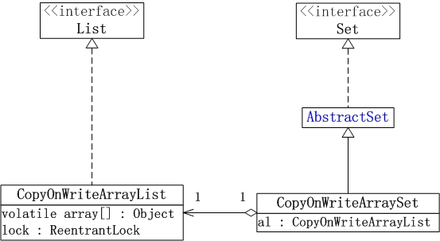
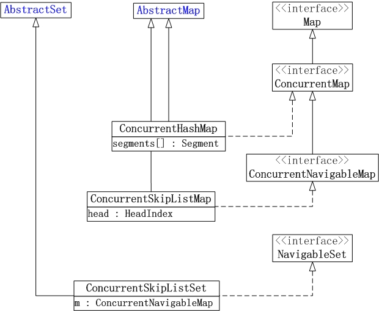
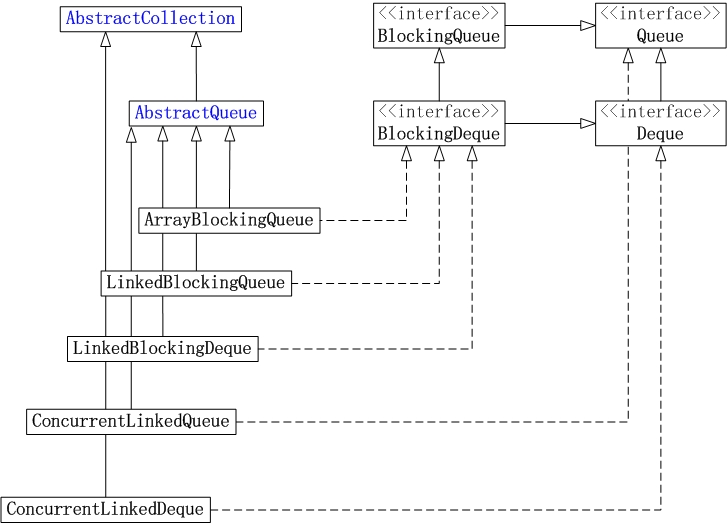

JUC集合概述
Java集合包
java集合主要包括Collection和Map类，而Collection集合又可以划分为List(队列)和Set(集合)。
List的实现类主要有: LinkedList, ArrayList, Vector, Stack。
- LinkedList是双向链表实现的双端队列；它不是线程安全的，只适用于单线程。
- ArrayList是数组实现的队列，它是一个动态数组；它也不是线程安全的，只适用于单线程。
- Vector是数组实现的矢量队列，它也一个动态数组；不过和ArrayList不同的是，Vector是线程安全的，它支持并发。
- Stack是Vector实现的栈；和Vector一样，它也是线程安全的。
Set的实现类主要有: HastSet和TreeSet。
- HashSet是一个没有重复元素的集合，它通过HashMap实现的；HashSet不是线程安全的，只适用于单线程。
- TreeSet也是一个没有重复元素的集合，不过和HashSet不同的是，TreeSet中的元素是有序的；它是通过TreeMap实现的；TreeSet也不是线程安全的，只适用于单线程。
Map的实现类主要有: HashMap，WeakHashMap, Hashtable和TreeMap。
- HashMap是存储“键-值对”的哈希表；它不是线程安全的，只适用于单线程。
- WeakHashMap是也是哈希表；和HashMap不同的是，HashMap的“键”是强引用类型，而WeakHashMap的“键”是弱引用类型，也就是说当WeakHashMap 中的某个键不再正常使用时， 会被从WeakHashMap中被自动移除。WeakHashMap也不是线程安全的，只适用于单线程。
- Hashtable也是哈希表；和HashMap不同的是，Hashtable是线程安全的，支持并发。
- TreeMap也是哈希表，不过TreeMap中的“键-值对”是有序的，它是通过R-B Tree(红黑树)实现的；TreeMap不是线程安全的，只适用于单线程。
为了方便，我们将前面介绍集合类统称为”java集合包“。java集合包大多是“非线程安全的”，虽然可以通过Collections工具类中的方法获取java集合包对应的同步类，但是这些同步类的并发效率并不是很高。为了更好的支持高并发任务，并发大师Doug Lea在JUC(java.util.concurrent)包中添加了java集合包中单线程类的对应的支持高并发的类。 例如，ArrayList对应的高并发类是CopyOnWriteArrayList，HashMap对应的高并发类是ConcurrentHashMap，等等。
JUC包在添加”java集合包“对应的高并发类时，为了保持API接口的一致性，使用了”Java集合包“中的框架。 例如，CopyOnWriteArrayList实现了“Java集合包”中的List接口，HashMap继承了“java集合包”中的AbstractMap类，等等。 得益于“JUC包使用了Java集合包中的类”，如果我们了解了Java集合包中的类的思想之后，理解JUC包中的类也相对容易；理解时，最大的难点是，对JUC包是如何添加对“高并发”的支持的！
JUC中的集合类
下面，我们先了解JUC包中集合类的框架；为了方便讲诉，我将JUC包中的集合类划分为3部分来进行说明。在简单的了解JUC包中集合类的框架之后，后面的章节再逐步对各个类进行介绍。
List和Set
JUC集合包中的List和Set实现类包括: CopyOnWriteArrayList, CopyOnWriteArraySet和ConcurrentSkipListSet。 ConcurrentSkipListSet稍后在说明Map时再说明，CopyOnWriteArrayList 和 CopyOnWriteArraySet的框架如下图所示： 
- CopyOnWriteArrayList相当于线程安全的ArrayList，它实现了List接口。CopyOnWriteArrayList是支持高并发的。
- CopyOnWriteArraySet相当于线程安全的HashSet，它继承于AbstractSet类。CopyOnWriteArraySet内部包含一个CopyOnWriteArrayList对象，它是通过CopyOnWriteArrayList实现的。
Map
JUC集合包中Map的实现类包括: ConcurrentHashMap和ConcurrentSkipListMap。它们的框架如下图所示： 
- ConcurrentHashMap是线程安全的哈希表(相当于线程安全的HashMap)；它继承于AbstractMap类，并且实现ConcurrentMap接口。ConcurrentHashMap是通过“锁分段”来实现的，它支持并发。
- ConcurrentSkipListMap是线程安全的有序的哈希表(相当于线程安全的TreeMap); 它继承于AbstractMap类，并且实现ConcurrentNavigableMap接口。ConcurrentSkipListMap是通过“跳表”来实现的，它支持并发。
- ConcurrentSkipListSet是线程安全的有序的集合(相当于线程安全的TreeSet)；它继承于AbstractSet，并实现了NavigableSet接口。ConcurrentSkipListSet是通过ConcurrentSkipListMap实现的，它也支持并发。
Queue
JUC集合包中Queue的实现类包括: ArrayBlockingQueue, LinkedBlockingQueue, LinkedBlockingDeque, ConcurrentLinkedQueue和ConcurrentLinkedDeque。它们的框架如下图所示： 
- ArrayBlockingQueue是数组实现的线程安全的有界的阻塞队列。
- LinkedBlockingQueue是单向链表实现的(指定大小)阻塞队列，该队列按 FIFO（先进先出）排序元素。
- LinkedBlockingDeque是双向链表实现的(指定大小)双向并发阻塞队列，该阻塞队列同时支持FIFO和FILO两种操作方式。
- ConcurrentLinkedQueue是单向链表实现的无界队列，该队列按 FIFO（先进先出）排序元素。
- ConcurrentLinkedDeque是双向链表实现的无界队列，该队列同时支持FIFO和FILO两种操作方式